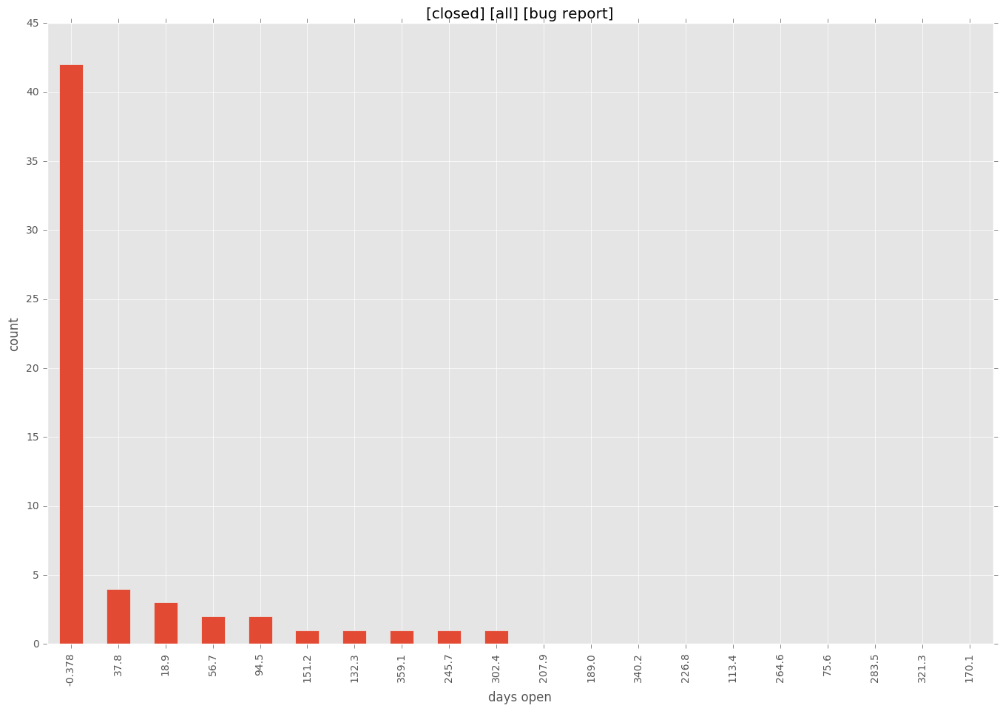
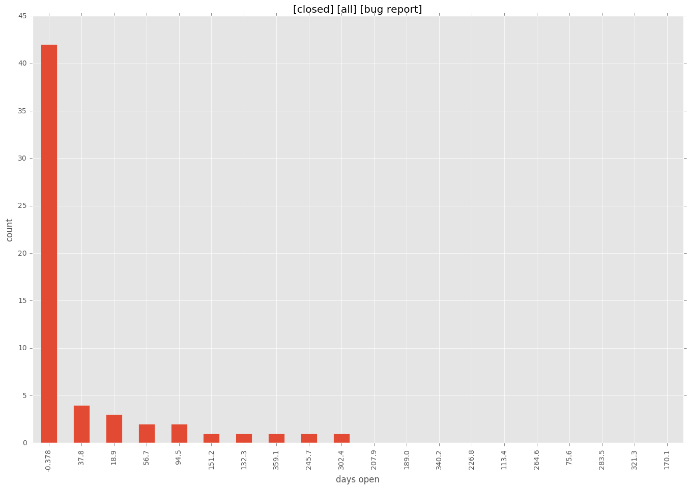

total issue counts
unknown: 2
feature pull request: 49
docs report: 1
pullrequest: 228
docs pull request: 13
bugfix pull request: 147
feature idea: 19
issue: 92
new plugin: 15
bug report: 74
issue history

pullrequest history


days open by issue type
bugfix pull request
count: 223
std: 40.4014257046
min: 0
max: 297
median: 0.0
mean: 14.2107623318
all
count: 413
std: 101.351049807
min: 0
max: 707
median: 1.0
mean: 40.6610169492
pullrequest
count: 0
std: nan
min: nan
max: nan
median: nan
mean: nan
docs pull request
count: 22
std: 25.1239783019
min: 0
max: 99
median: 0.0
mean: 11.5
docs report
count: 0
std: nan
min: nan
max: nan
median: nan
mean: nan
feature pull request
count: 70
std: 66.982005247
min: 0
max: 331
median: 22.0
mean: 47.9285714286
feature idea
count: 17
std: 226.150977681
min: 0
max: 707
median: 455.0
mean: 388.470588235
issue
count: 0
std: nan
min: nan
max: nan
median: nan
mean: nan
new plugin
count: 20
std: 69.5453468117
min: 0
max: 201
median: 37.0
mean: 58.35
bug report
count: 59
std: 82.1876372381
min: 0
max: 378
median: 2.0
mean: 38.0508474576
closures grouped by total days open
 
